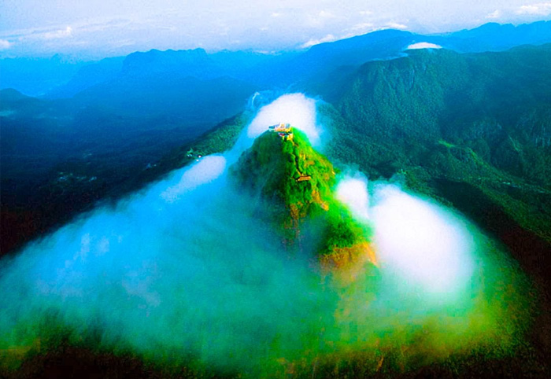
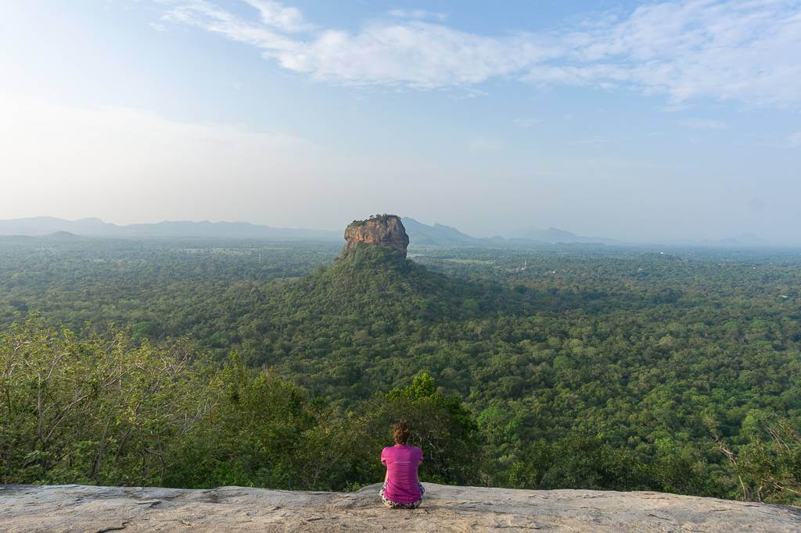
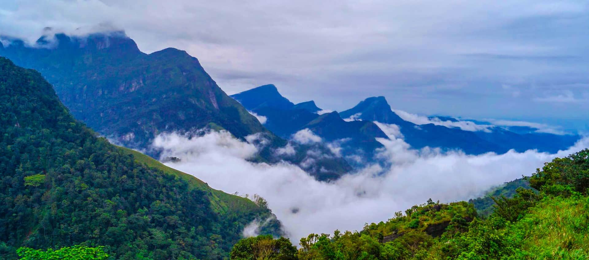
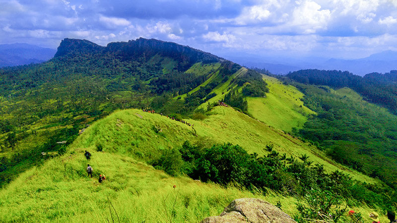
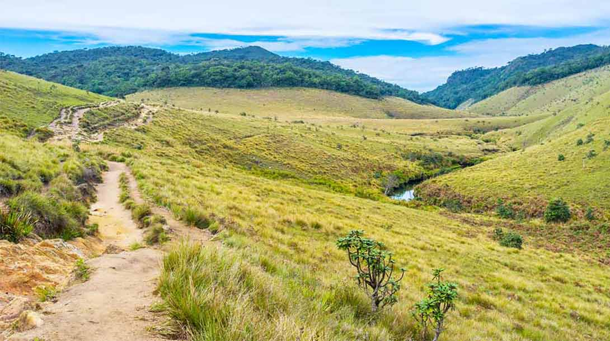
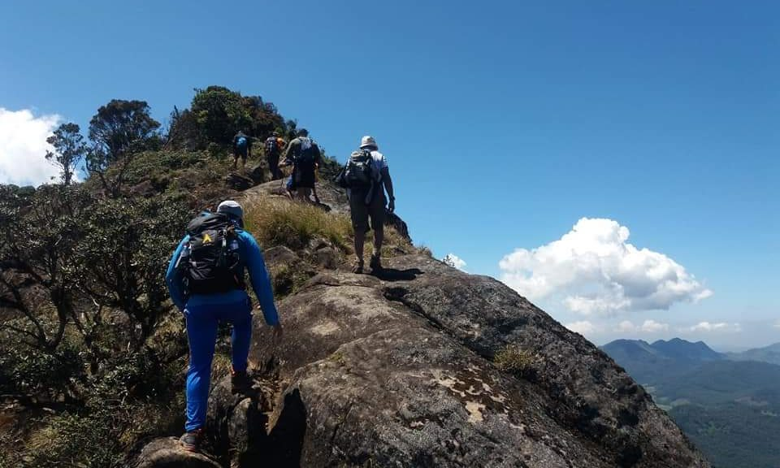
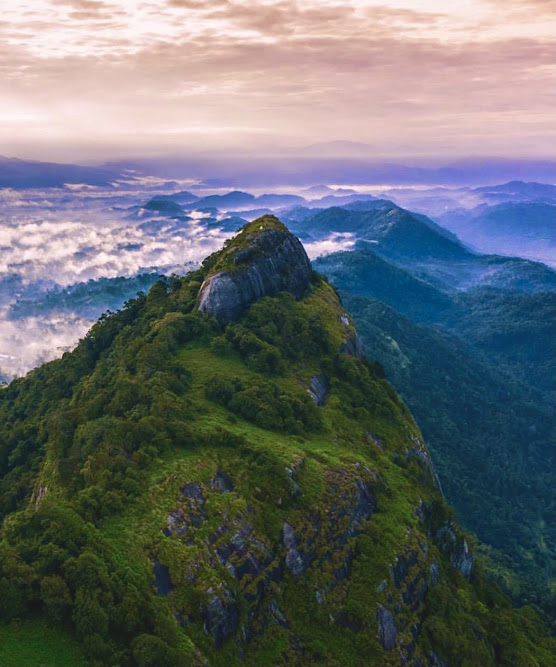
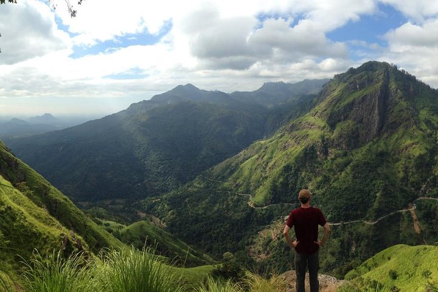
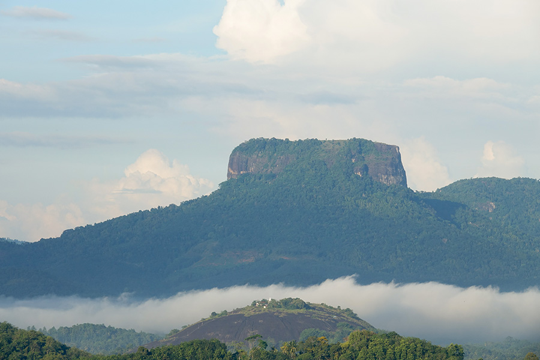

Top 10 Mountains To Hike
1 . Adam's Peak (Sri Pada)
Famous for its sacred footprint at the summit, Adam's Peak offers a spiritual and scenic climb, especially popular for sunrise treks.

2 . Pidurangala Rock
Located near Sigiriya, Pidurangala offers panoramic views of the surrounding landscape and a unique perspective of the Sigiriya Rock Fortress.

3 . Knuckles Mountain Range
Known for its rugged beauty, diverse wildlife, and remote trails, the Knuckles Range is ideal for experienced hikers looking for a challenge.

4 . Ella Rock
A moderate hike near the town of Ella, this trek rewards climbers with stunning views of the valley, tea plantations, and waterfalls.

5 . Hanthana Mountain Range
Located near Kandy, this range offers a relatively easy hike through tea estates, forests, and grasslands with scenic views of Kandy city.

6 . Horton Plains and World's End
A hike across the Horton Plains National Park, this trek leads to World's End, a sheer cliff with dramatic views of the surrounding lowlands.

7 . Kirigalpoththa
The second-highest mountain in Sri Lanka, Kirigalpoththa is a less popular but rewarding trek through misty forests in Horton Plains.

8 . Alagalla Mountain
Located near Kandy, Alagalla offers a steep and challenging hike with sweeping views of the surrounding hills and valleys.

9 . Mount Lavinia
A shorter but scenic hike near the coastal town of Mount Lavinia, offering views of the coastline and Colombo skyline.

10 . Bible Rock
This hike provides a unique rock formation and panoramic views of the surrounding area, making it a popular choice for day hikes.

What are the things You should know before hiking?
Research the Trail
Understand the difficulty level of the trail and ensure it matches your fitness level. Know how long the hike is and how much climbing is involved. Be aware of the type of terrain (rocky, muddy, forested, etc.) and any obstacles like rivers or cliffs. Always check the weather forecast for the day of the hike and the days leading up to it.
Proper Gear
Wear sturdy hiking boots or shoes with good grip to prevent slipping. Dress in layers and wear moisture-wicking, breathable fabrics. Avoid cotton, as it retains moisture. Bring a comfortable backpack for your essentials (water, snacks, map, etc.). Trekking poles can help with balance, especially on uneven terrain or steep slopes.
Navigation Tools
Understand the difficulty level of the trail and ensure it matches your fitness level. Know how long the hike is and how much climbing is involved. Be aware of the type of terrain (rocky, muddy, forested, etc.) and any obstacles like rivers or cliffs. Always check the weather forecast for the day of the hike and the days leading up to it.
Essential Supplies
Understand the difficulty level of the trail and ensure it matches your fitness level. Know how long the hike is and how much climbing is involved. Be aware of the type of terrain (rocky, muddy, forested, etc.) and any obstacles like rivers or cliffs. Always check the weather forecast for the day of the hike and the days leading up to it.
Physical Fitness
Understand the difficulty level of the trail and ensure it matches your fitness level. Know how long the hike is and how much climbing is involved. Be aware of the type of terrain (rocky, muddy, forested, etc.) and any obstacles like rivers or cliffs. Always check the weather forecast for the day of the hike and the days leading up to it.
Hiking Etiquette
Understand the difficulty level of the trail and ensure it matches your fitness level. Know how long the hike is and how much climbing is involved. Be aware of the type of terrain (rocky, muddy, forested, etc.) and any obstacles like rivers or cliffs. Always check the weather forecast for the day of the hike and the days leading up to it.
Safety Tips
Understand the difficulty level of the trail and ensure it matches your fitness level. Know how long the hike is and how much climbing is involved. Be aware of the type of terrain (rocky, muddy, forested, etc.) and any obstacles like rivers or cliffs. Always check the weather forecast for the day of the hike and the days leading up to it.